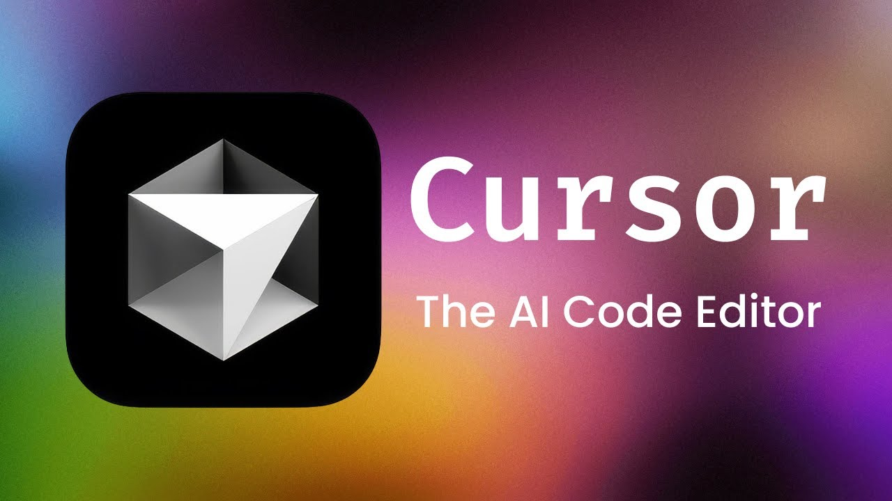
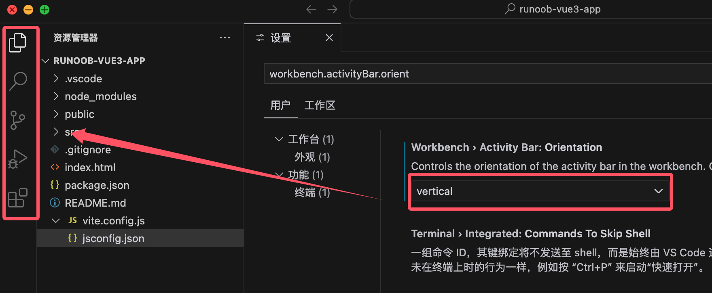
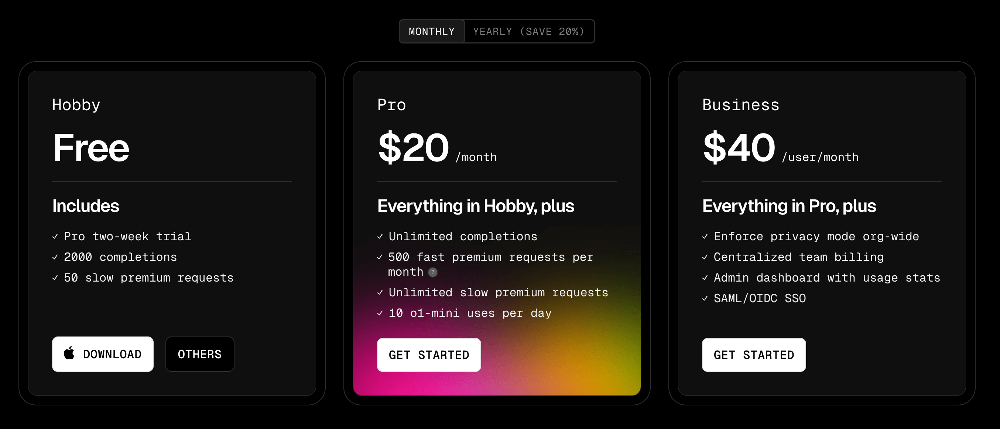

Cursor 紹介
Cursor は、Anysphere 社によって開発された、人工知能に基づく現代的なコードエディターです。
Cursor は基づいてVS Code開発されたエディターであり、VS Code の強力な機能と使い慣れた操作感を保ちながら、AI 技術の統合に重点を置き、開発者がより効率的にコードを記述できるよう支援します。
また、中国国内の Alibaba と ByteDance も、VS Code をベースに深くカスタマイズした AI IDE を発表しています：
主な特徴：
- AIネイティブ設計：基盤アーキテクチャの段階から AI 機能が組み込まれており、後から追加するプラグインではありません。
- インテリジェントなコード生成：自然言語による記述でコードスニペットをすばやく生成します。
- コンテキスト認識：プロジェクト構造とコードの関係性を深く理解します。
- リアルタイム支援：プログラミング中に即時の提案と最適化を提供します。
- マルチモデルサポート：複数の先進的な大規模言語モデル（LLM）を統合しています。

Cursor と従来のIDEの違い
| 機能特性 | 従来のIDE | Cursor |
|---|---|---|
| コード補完 | 構文解析と既存コードに基づく静的補完 | AI 駆動のインテリジェント補完。コンテキストと意図を理解します。 |
| コード生成 | 事前定義されたテンプレートとコードスニペットに依存 | 自然言語による記述から完全なコードロジックを生成 |
| 問題解決 | ドキュメントや Stack Overflow などを手動で検索する必要があります | 内蔵の AI アシスタントがプログラミングの問題に即座に回答 |
| コード理解 | 構文ハイライトと基本構造の分析を提供 | コードロジックを深く理解し、詳細な説明を提供 |
| リファクタリングと最適化 | 手動操作で、開発者の経験に依存 | AI がインテリジェントに分析し、最適なリファクタリング案を提案 |
| 学習サポート | 外部の資料やドキュメントが必要 | 内蔵の技術知識で、リアルタイムな学習支援 |
| エラー処理 | コンパイルエラーの表示と基本的な構文チェック | 潜在的な問題を予測し、修正提案と説明を提供 |
| プロジェクト理解 | ファイルレベルの分析とナビゲーション | プロジェクト全体のアーキテクチャの深い理解と関連分析 |
| コラボレーション方法 | 主にチームメンバー間のコミュニケーションに依存 | AI がインテリジェントなプログラミングパートナーとして開発プロセスに参加 |
| 適応性 | 手動設定とプラグイン拡張が必要 | プロジェクトの種類やプログラミング言語の特性に自動適応 |
主な違いのまとめ：
| 比較項目 | 従来のIDE | Cursor |
|---|---|---|
| インタラクション方式 | メニューやショートカットキーに基づくツール操作 | 自然言語による対話 + 従来の操作 |
| 学習曲線 | 多くのショートカットキーや機能の場所を覚える必要がある | 対話を通じてすぐに使いこなせ、学習のハードルを下げる |
| 開発効率 | 開発者の経験と熟練度に依存 | AI 支援によりコーディング速度が大幅に向上 |
| コード品質 | 主に開発者のスキルレベルに依存 | AI が継続的にベストプラクティスの提案を提供 |
| 知識獲得 | 能動的に検索して学習する必要がある | AI の推薦や説明を受動的に受け取る |
| 問題診断 | エラーメッセージに基づいて手動で調査 | AI が問題の根本原因を分析し、解決策を提供 |
| イノベーション能力 | 開発者の知識範囲に制限される | AI が多様な解決のアイデアを提供 |
| 対象者 | ある程度のプログラミング基礎が必要 | あらゆるレベルの開発者に適している |
設定
以前に VS Code を使用していた場合、拡張機能、テーマ、設定、ショートカットキーをワンクリックで Cursor に簡単にインポートできます。
Cursor Settings > General > Account に移動し、import を選択して設定ファイルをインポートするだけで移行が完了します。

Cursor は VS Code の最新バージョンを定期的に同期し、常に最新の機能と最適化を利用できるようにします。
なぜ Cursor は独立したアプリであり、VS Code のプラグインではないのですか？
独立したアプリとして、Cursor はエディターインターフェースをより深く最適化し、より強力な AI 統合を実現できます。例えば、Cursor Tab や CMD-K などの機能は、プラグインの形で既存のプログラミング環境に実装することはできません。
Cursor を設定するには？
右上隅の歯車ボタンをクリックするか、ショートカットキーを押しますCtrl/⌘ + Shift + J、Cursor 専用の設定パネルを開くことができます。
また、以下の方法でもCtrl/⌘ + Shift + P、入力してCursor Settings開くことができます。

なぜ Cursor のアクティビティバーは水平なのですか？
デフォルトでは、Cursor のアクティビティバーは水平に配置されています。これはスペースを節約し、チャット機能を統合しやすくするためです。

従来の垂直アクティビティバーの方が好みの場合は、次の手順で調整できます：
開くCursor 設定。
検索して見つけますworkbench.activityBar.orientation、その値を次のように変更しますvertical。
Cursor を再起動すると有効になります。

変更してvertical再起動した後の効果：

Cursor の使用
Cursor は、さまざまなユーザーのニーズを満たすために、複数のサブスクリプションプランを提供しています。

Hobby プラン
-
14 日間の Pro 試用（高速プレミアムモデル使用 250 回を含む）
-
低速プレミアムモデル使用 50 回
-
コード補完使用 2000 回
Pro プラン
-
毎月の高速プレミアムモデル使用 500 回
-
低速プレミアムモデル使用は無制限
-
コード補完使用は無制限
-
毎月の o1+mini 使用 10 回
Business プラン
-
使用量は Pro プランと同様
-
組織全体でプライバシーモードを強制有効化
-
チームの請求を一元管理
-
管理者ダッシュボードで使用統計を確認
-
SAML/OIDC シングルサインオン (SSO) をサポート
プレミアムモデル
GPT-4、GPT-4o、Claude 3.5 Sonnet はすべてプレミアムモデルと見なされます。Claude 3.5 Haiku の各リクエストは、プレミアムモデルリクエストの 1/3 回としてカウントされます。
Pro 試用
すべての新規ユーザーは 14日間の Pro 試用を利用できます。試用期間中は、すべての Pro 機能と 250 回の高速プレミアムモデルリクエストを使用できます。14日間の試用期間が終了すると、アップグレードしなかったユーザーは自動的に Hobby プランにダウングレードされます。
高速リクエストと低速リクエスト
デフォルトでは、Cursor サーバーはすべてのユーザーに高速な高度なモデルリクエストを提供しようとします。ただし、ピーク時には、高速リクエストの割り当てを使い切ったユーザーは低速リクエストプール、つまり高速リクエストが利用可能になるのを待つキューに移されます。
このキューは公平で、Cursor はキューの待ち時間を短縮するよう努めます。より多くの高速リクエストが必要で、待ちたくない場合は、設定ページで追加の割り当てを購入できます。
使用状況を確認する
Cursor の設定ページで使用状況を確認できます。
-
Cursor アプリで、次の場所に移動しますCursor Settings > General > Account。
-
Cursor の使用量は毎月リセットされ、リセット時期はサブスクリプションの開始日に基づきます。

クリックしてノートを共有
<p style="font-size:14px;">ノートはこの記事の内容を拡張したものである必要があります！</p><br> <p style="font-size:12px;"><a href="../tougao.html" target="_blank">記事の投稿は、ここをクリックしてください</a></p> <p style="font-size:14px;"><a href="../w3cnote/runoob-user-test-intro.html" target="_blank">登録招待コードの取得方法</a></p> <h3 class="text-muted"><i class="fa fa-info-circle" aria-hidden="true"></i> ノートを共有する前に<a href=";.html" class="runoob-pop">ログイン</a>が必要です！</h3> <p><a href="../w3cnote/runoob-user-test-intro.html" target="_blank">登録招待コードの取得方法</a></p>